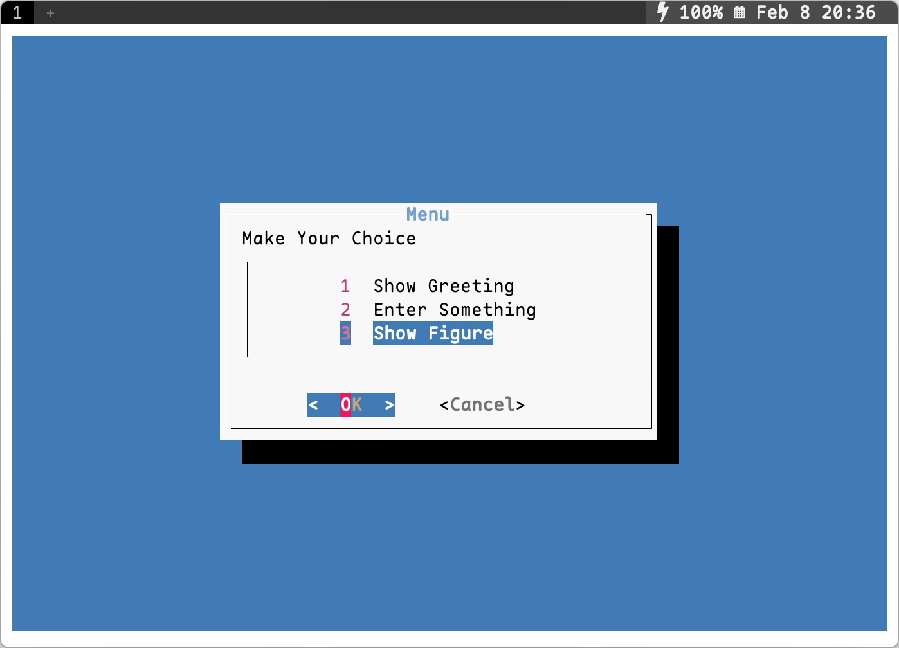

Preface
Inspiration came from a lecture by Yanyan Jiang：[算法竞赛入门] 为什么要逼大家用 NOILinux？，有参考，但不完全一样.
Mastering this skill will allow you to‚Äîdisplay “slides” in the terminal. Its practicality is limited, but it‚Äôs fun to play with ¬∑^v^¬∑.
Demo


Implementation
Overall Framework
Directory

.sh files are bash scripts for displaying a single slide, .md files are the Markdown content to be rendered, and .png files are the images to be displayed.
Launcher
First, print the cover (essentially outputting a page of rendered text in the terminal), then use read to take input and control slide behaviors such as page flipping, image display, exiting, etc.
0_flow.sh：
#!/bin/bash
bash ./1_banner.sh ## print the cover
pc=1 # page counter
while true
do
read -p ":" choice ## take input and control slide behaviors
if [ "$choice" == "p" ]; then # previous page
((pc--))
bash ./${pc}*
elif [ "$choice" == "g" ]; then # display an image
xdg-open ./load_init.png
elif [[ $choice =~ ^[1-7]$ ]]; then # go to the specific page
pc=$choice
bash ./${pc}*
elif [ "$choice" == "E" ]; then # exit the script
break
else # default: next page
((pc++))
bash ./${pc}*
fi
done
Single Page Display
Displaying a single page essentially means showing a page of text. The basic steps are:
- Clear the previous page’s content using
clear; - Calculate the total number of lines of the rendered text;
- To center the content vertically, calculate the padding for the top and bottom;
- Print the top padding, render and print the content text, then print the bottom padding.
For example: (2_question.sh)
clear
length=`python3 renderer.py question.md | wc -l`
total=`tput lines`
sus=$((($total-$length)/2))
for ((i=1; i<=$sus; i++))
do
echo
done
python3 renderer.py question.md
for ((i=1; i<$sus; i++))
do
echo
done
Image Display and External Program Calls

Use read to take input. When the input is a specific character, use xdg-open to open a specific image. Close it with the ESC key after displaying.
read -p ":" choice
if [ "$choice" == "g" ]; then
xdg-open ./picture.png
fi
Similarly, replacing xdg-open ... with other commands can play audio/video or execute various programs.
Text Rendering
ASCII Art for Cover Pages
Use figlet to display the theme word and lolcat to color it. Besides the font styles that come with figlet, you can find and download more font styles from figlet-fonts. The “Boot” shown above corresponds to the command figlet " Boot" -f roman | lolcat -S 30. (Another optional command-line tool is toilet.)
ESC Escape Sequences
The printf command can output fancier text in the terminal using \033 escape sequences. It can achieve simple effects like color, bold, italics, etc., and multiple effects can be combined. For example, the last line in the image corresponds to printf "\033[2;34;01;21;09myour text\033[0m\n". (This also applies to output in other programming languages. 033 is the octal ASCII code for ESC. The specific colors depend on the terminal’s color scheme.)
Markdown Rendering
- glow:
glowis a command-line tool, used asglow foo.md. - rich: rich is a Python library that can render Markdown.
Other Interesting Command-Line Tools
-
asciiquarium
ASCII Art aquarium, very beautiful. You can find the ASCII fish in my avatar here, above the third seaweed from the left in the image below:

-
oneko
Summon a little cat, VERY cute:
-
cowsay

-
dialog
Interactive TUI dialog boxes, which are also very suitable for single-page slide presentations, for example:
#!/bin/bash choice=$(dialog --clear --title "Menu" --menu "Make Your Choice" 10 40 3 \ 1 "Show Greeting" 2 "Enter Something" 3 "Show Figure" 2>&1 >/dev/tty) case $choice in 3) xdg-open ./figure_1.png ;; # SNIP # esac